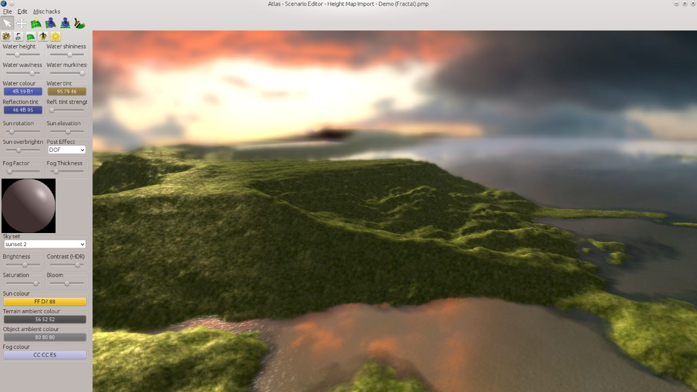
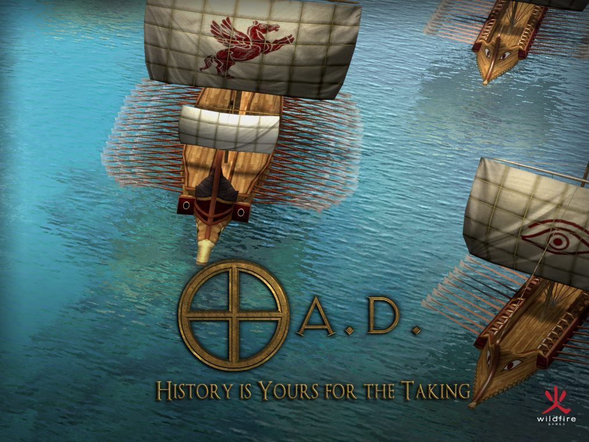
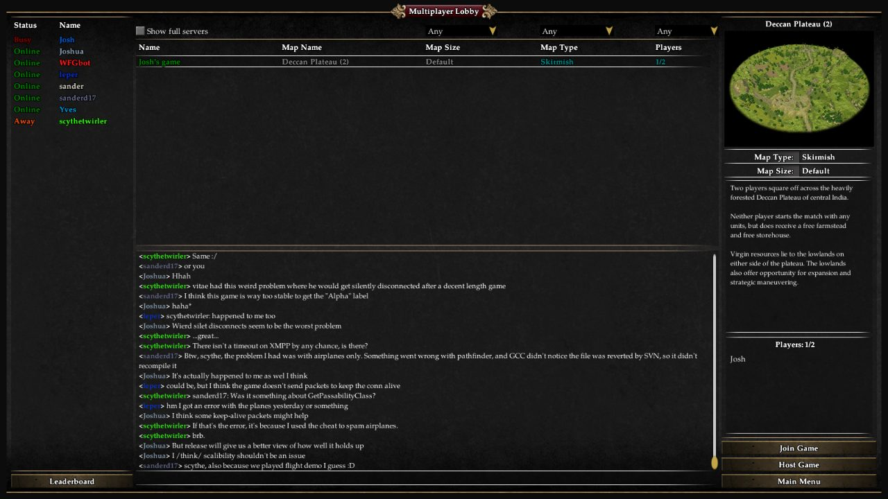

What the game is
Economic base building plus real-time battles. Villagers gather food, wood, stone, and metal; military units defend, raid, and push across the map.
A free, open-source ancient-warfare real-time strategy game: gather resources, build a town, train armies, research upgrades, and fight historical civilizations on large maps.
Choose 0 A.D. when you want the closest open-source equivalent to an Age of Empires style session. It is bigger and heavier than the browser arcade, so it belongs in the desktop/VM tier rather than the Raspberry Pi weekend tier until client installers are cached and tested.
Economic base building plus real-time battles. Villagers gather food, wood, stone, and metal; military units defend, raid, and push across the map.
A large static mirror of the official website and game manual is already on GannanNet, with screenshots and background material available offline.
Windows, Linux, and macOS release packages are cached locally. A real client smoke and LAN multiplayer test are still the next promotion gates.
0 A.D. Release 28 platform packages are cached locally. These files are large, but they make the RTS playable without internet prep.
Primary Windows installer.
Download EXEPortable Linux x86_64 build.
Download AppImageDMG for newer Macs.
Download ARM DMGDMG for Intel Macs.
Download Intel DMGThe website/manual mirror and local hashes are available offline.
Open download shelfSelected screenshots are cached inside this hub so the arcade can explain the game offline.



This is a starter guide, not a full manual. Use the local mirror links for deeper offline reading where available.
Send citizens to gather food and wood, then branch into stone and metal as your build order develops.
Find resources, choke points, animals, relics, and enemy bases before committing your army.
Too many soldiers too early slows your economy; too little defense invites raids.
Town and city phases unlock stronger structures, technologies, and military options.
Harass resources, deny expansions, and attack when your economy can replace losses.
These links point at the current GannanNet mirror. If the internet is down, the local mirror links should still work.
Official website mirror and 0 A.D. project pages. Upstream project is open-source; confirm current packaging/licensing before mirroring installers.
See ATTRIBUTION.txt for screenshot and source notes.
This tells players whether the entry is ready to play or only ready to research.
/var/www/html/mirrors/0ad, about 1.7 GB
Windows, Linux AppImage, and macOS packages are cached under the native downloads shelf.
Run real LAN multiplayer/client smoke with cached clients